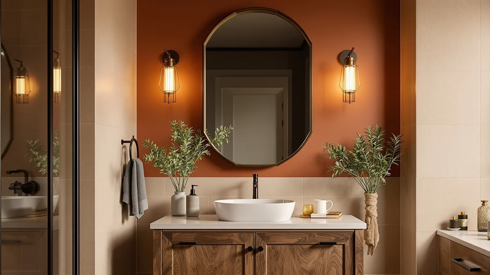

The Best Farmhouse Bathroom Mirrors (2026)
Prices and picks verified as of August 2026. Independent, reader-supported reviews.


Quick Answer
The best farmhouse bathroom mirrors balance clean lines with real storage, and the Janboe Oval Medicine Cabinet does both at $209.99. Its oval profile softens a farmhouse vanity wall while its tempered glass shelves keep toiletries out of sight. If you need more surface area, the Janboe LED Medicine Cabinet Bathroom at 30 by 32 inches is worth the jump in price.
Our pick: Janboe Oval Medicine Cabinet with for $209.99 Check Price on Amazon
Bottom line: our top pick is the Janboe Oval Medicine Cabinet with Light at $209.99. The best budget option is the Led Mirror for Bathroom at $56.99.
Things to Know Before You Buy
- Farmhouse bathrooms mix black or aluminum-framed mirrors with warm lighting, so frame finish and LED color temperature matter as much as size.
- Medicine cabinets solve the storage problem a plain mirror can't, and every recessed or surface-mount option in this guide uses tempered glass shelving.
- Oval and simple rectangular shapes read as more farmhouse than heavily ornate frames, which is why most of our picks skip decorative trim.
- Measure your vanity width before you buy. A 30 by 32 inch cabinet needs more wall than a 20 by 24 inch mirror, and farmhouse vanities often run narrower than modern double-sink setups.
- Price climbs fast once built-in LED lighting and larger glass enter the picture, so decide whether you need a lit mirror or only extra storage before you spend $300 or more.
The best farmhouse bathroom mirrors do two things at once: they soften a room built around shiplap and matte black fixtures, and they give you somewhere to put your toothbrush and razor that isn't the edge of the sink. We looked at oval medicine cabinets, a black-framed cabinet, and simple aluminum-trimmed LED mirrors to find picks that fit that brief without looking like they belong in a hotel bathroom.
We compared seven mirrors and medicine cabinets on price, size, frame material, and storage, then matched each one to the kind of farmhouse bathroom it fits best. The Janboe Oval Medicine Cabinet with its tempered glass door and aluminum frame is our top pick at $209.99. Its oval shape and 16 by 28 inch footprint work in most single-sink vanities, and the hidden storage behind the mirror keeps counters clear, which matters more in a farmhouse bathroom than in a minimalist one.
Not every bathroom needs a medicine cabinet, and not every budget stretches to $389.99 for the larger Janboe LED model. We also picked a $79.99 wall mirror for anyone who wants the look without built-in storage, plus a black-framed cabinet for bathrooms already committed to matte black hardware. If built-in light is your priority across the board, our guide to LED bathroom mirrors covers that ground in more depth. Otherwise, read on for the full breakdown or jump to the comparison table if you already know your size and budget.
Why You Should Trust Us
Ilane Tall has spent years covering bathroom fixtures and small-space renovations for Best Bathroom Mirrors, with a focus on how frame material, glass quality, and cabinet depth hold up under daily use. For this guide to the best farmhouse bathroom mirrors, she compared listed specs, checked pricing, and matched dimensions against typical farmhouse vanity widths so every pick here fits a real bathroom, not only a product photo.
How We Picked
We started with mirrors and medicine cabinets built from tempered glass and aluminum, since that combination holds up to bathroom humidity better than untreated wood or plastic trim. From there, we narrowed the list to sizes between 16 and 32 inches wide, a range that covers single-sink vanities in most farmhouse-style bathrooms without overwhelming a smaller room.
We also weighed price against what you actually get. A cabinet with built-in LED lighting and a modular design costs more than a plain wall mirror, so we kept both ends of that range in the running instead of picking only premium options, the same approach we use in our guide to bathroom mirrors with cabinets. Every product here had to list clear dimensions and material specs. We skipped listings that stayed vague about glass thickness or frame construction, since that usually signals a corner cut somewhere else.
How We Compared
We checked each mirror's listed dimensions against standard vanity widths of 24, 30, and 36 inches to confirm it would fit without overhang. For the medicine cabinets, we compared interior shelf depth and door swing against typical farmhouse bathroom layouts, where storage often has to fit around a pedestal sink or a narrower run than a modern double vanity allows.
We also priced every pick against its closest competitor at a similar size to see where the premium for LED lighting or a black frame actually pays off, and where a plain mirror does the job equally well. The comparison table below lists the aggregate rating for each product as of publishing.
Our Picks

Janboe Oval Medicine Cabinet with
What we like
- Oval shape softens a vanity wall built around square tile or shiplap
- Tempered glass shelves inside keep toiletries out of sight
- Aluminum frame resists the humidity that warps wood-trimmed cabinets
- 16 by 28 inch size fits most single-sink vanities without overhang
Flaws but not dealbreakers
- No built-in lighting, so you'll need a separate vanity light or sconce
- Interior storage is shallower than the larger 30 by 32 inch Janboe model
| Material | Tempered glass + aluminum |
| Size | 16inch×28inch |
The Janboe Oval Medicine Cabinet is the pick we'd put in most farmhouse bathrooms first. Its oval profile reads as softer than the boxy rectangles that dominate this category, and at 16 by 28 inches it fits a standard single-sink vanity without crowding the wall around it. The aluminum frame holds up to steam and humidity better than the painted wood trim on cheaper cabinets, which matters in a style that already leans on real wood elsewhere in the room.
Behind the tempered glass door, the cabinet gives you shelf space for the items you'd otherwise leave on the counter: razors, toothpaste, contact lens cases. That hidden storage is the real value here. A farmhouse bathroom depends on open shelving and exposed hooks for its look, and a medicine cabinet is often the only place left to put things out of view. At $209.99, this sits in the middle of our price range, above the plain wall mirrors and below the LED-lit cabinets, and it earns that middle ground if oval styling and shelf space matter more to you than built-in lighting.

Janboe LED Medicine Cabinet Bathroom
What we like
- 30 by 32 inch size covers a wide vanity or double-sink setup
- Built-in LED lighting removes the need for a separate vanity fixture
- Same tempered glass and aluminum construction as the smaller Janboe cabinet
- More interior shelf space for two people sharing a vanity
Flaws but not dealbreakers
- At $389.99, it costs nearly double the smaller Janboe Oval model
- The larger footprint needs a wider, uninterrupted wall than most single-sink farmhouse vanities offer
| Material | Tempered glass + aluminum |
| Size | 30×32inch |
The Janboe LED Medicine Cabinet is the same idea as our top pick, scaled up. At 30 by 32 inches, it covers enough wall space for a double-sink vanity or a single wide sink with room to spare, and the built-in LED lighting means you don't need to budget for a separate sconce or bar light above it. That's a real saving if you're renovating a farmhouse bathroom from scratch and would otherwise be shopping for lighting and a mirror separately.
The tradeoff is price and space. At $389.99, it's the most expensive pick in this guide, and it needs a wall wide enough to hold it without overlapping a window or towel bar, which rules it out for the narrower vanities common in older farmhouse-style homes. If your bathroom has the wall space and your budget stretches past $300, the extra light output and shelf space make this the better long-term buy over two separate fixtures.

KAASUNES LED Medicine Cabinet 16x24inch
What we like
- 16 by 24 inch size fits powder rooms and secondary bathrooms
- Includes LED lighting at a lower price than the larger Janboe LED cabinet
- Tempered glass door and aluminum frame match the durability of our other picks
Flaws but not dealbreakers
- Smaller interior storage than the 16 by 28 inch Janboe Oval cabinet
- Rectangular shape reads less distinctly farmhouse than the oval options here
| Material | Tempered glass + aluminum |
| Size | 16x24inch |
The KAASUNES LED Medicine Cabinet fills the gap between a plain mirror and a full-size lit cabinet. At 16 by 24 inches, it's sized for a powder room or a secondary bathroom where you don't need much storage but still want the convenience of built-in lighting. At $194.00, it undercuts the larger Janboe LED cabinet by nearly $200 while keeping the same tempered glass and aluminum build.
It won't hold as much as our larger picks, and its rectangular shape is a more generic mirror silhouette than the oval Janboe or the black-framed cabinet further down this list. But for a guest bathroom or a small farmhouse powder room where floor space and wall space are both tight, the combination of built-in light and a sub-$200 price is hard to match.

Spliceable Modular LED Lighted Bathroom
What we like
- Modular, spliceable design lets you adjust the configuration to your wall
- Built-in LED lighting at the lowest price of any lit option in this guide
- 20 by 28 inch size fits most single-sink vanities
Flaws but not dealbreakers
- No interior storage, since it's a mirror rather than a cabinet
- Modular installation takes more setup time than hanging a fixed mirror
| Material | Tempered glass + aluminum |
| Size | 20"×28" |
If you want LED lighting without paying medicine cabinet prices, the Spliceable Modular LED mirror is the best value here. At $189.99, it costs less than the KAASUNES cabinet and roughly half of the larger Janboe LED model, while still giving you a lit, 20 by 28 inch mirror sized for a standard vanity. The modular, spliceable design also lets you adjust the configuration slightly to fit an irregular wall, which comes up more often in older farmhouse homes than in new construction.
The catch is storage. This is a mirror, not a cabinet, so anything you'd keep behind it needs another home: a vanity drawer, an open shelf, a cabinet elsewhere in the room. That's a fair trade if your farmhouse bathroom already leans on open shelving for storage and you need the mirror to look good and light the room well. For anyone who wants both light and storage in one fixture, the KAASUNES or Janboe cabinets are the better fit.

Black Bathroom Mirror Medicine Cabinets
What we like
- Black frame matches the matte black hardware common in farmhouse bathrooms
- 31.5 by 31.5 inch square format works well above a wide single sink
- Tempered glass door and aluminum construction match our other cabinet picks
Flaws but not dealbreakers
- At $299.99, it costs more than the similarly sized Janboe Oval cabinet
- Square shape carries more visual weight than the oval or simple rectangular mirrors here
| Material | Tempered glass + aluminum |
| Size | 31.5"L x 31.5"W |
Farmhouse bathrooms lean hard on matte black for faucets, drawer pulls, and light fixtures, and this cabinet is built to match. Its black frame is the only one in this guide that commits to that finish, and the 31.5 by 31.5 inch square format gives it enough presence to anchor a vanity wall on its own, without needing a matching black-framed light fixture next to it.
That presence comes at a cost. At $299.99, it's priced above our top pick, and the square shape carries more visual weight than the oval Janboe or a simple rectangular mirror, so it works best in a bathroom that already has other black fixtures to balance it against. Drop it into a room with brushed nickel or chrome hardware and it looks out of place rather than intentional.

Led Mirror for Bathroom 24x32
What we like
- 32 by 24 inch size gives more mirror surface than most picks under $150
- Built-in LED lighting at the lowest price of any lit mirror in this guide
- Tempered glass and aluminum frame match the build quality of pricier picks
Flaws but not dealbreakers
- No storage, so anything behind a mirror door needs another home
- Simple frame lacks the oval or black-framed styling of pricier options
| Material | Tempered glass + aluminum |
| Size | 32"L x 24"W |
At $119.99, the Led Mirror for Bathroom undercuts every other lit option in this guide while still giving you a 32 by 24 inch mirror, more surface area than the smaller KAASUNES cabinet at nearly $75 less. The tempered glass and aluminum frame hold up the same way our pricier picks do, so you're not sacrificing durability for the lower price.
What you give up is styling and storage. The frame is plain rather than oval or black, so it reads as a generic lit mirror instead of a piece that reinforces a farmhouse look on its own. Pair it with black hardware elsewhere in the room, a black-framed shower door, matte black fixtures, and it holds its own. On its own, it's a functional, well-priced mirror rather than a design statement.

ANYHI 20"x24" Bathroom Wall Mirror
What we like
- At $79.99, it's the least expensive pick in this guide
- 24 by 20 inch size fits a smaller vanity or guest bathroom
- Tempered glass and aluminum frame match the durability of the pricier cabinets
Flaws but not dealbreakers
- No lighting or storage, so it depends on existing fixtures for both
- Smallest mirror surface of any pick in this guide
| Material | Tempered glass + aluminum |
| Size | 24"L x 20"W |
Not every farmhouse bathroom needs lighting or storage built into the mirror. If you already have a sconce or vanity bar above the sink and a drawer or shelf for toiletries, the ANYHI wall mirror covers the one thing you're missing for $79.99. Its 24 by 20 inch size fits a smaller vanity or a guest bathroom where a larger cabinet would crowd the wall.
It's the smallest mirror in this guide and the only one that skips both lighting and storage entirely, so it isn't the pick for a primary bathroom that needs to do more work. But for a powder room, guest bath, or any space where you already have light and storage sorted out, there's no reason to pay more than $79.99 for the mirror itself.
Quick Comparison
| Product | Material | Price | Rating | Best for | Get it |
|---|---|---|---|---|---|
| Janboe Oval Medicine Cabinet with | Tempered glass + aluminum | $209.99 | 4 | Most farmhouse bathrooms | View on Amazon → |
| Janboe LED Medicine Cabinet Bathroom | Tempered glass + aluminum | $389.99 | 4 | Wide or double-sink vanities | View on Amazon → |
| KAASUNES LED Medicine Cabinet 16x24inch | Tempered glass + aluminum | $194.00 | 4 | Powder rooms and secondary baths | View on Amazon → |
| Spliceable Modular LED Lighted Bathroom | Tempered glass + aluminum | $189.99 | 4 | Best value for LED lighting | View on Amazon → |
| Black Bathroom Mirror Medicine Cabinets | Tempered glass + aluminum | $299.99 | 4 | Matte black hardware bathrooms | View on Amazon → |
| Led Mirror for Bathroom 24x32 | Tempered glass + aluminum | $119.99 | 4 | Best budget LED mirror | View on Amazon → |
| ANYHI 20"x24" Bathroom Wall Mirror | Tempered glass + aluminum | $79.99 | 4 | Guest baths and smaller vanities | View on Amazon → |
The Competition
The KAASUNES LED Medicine Cabinet was a close contender for the compact category, but its smaller 16 by 24 inch storage capacity kept it behind the Janboe Oval cabinet as an overall pick rather than the top spot.
The Black Bathroom Mirror Medicine Cabinet earned an Also Great spot for its matte black frame, but at $299.99 it costs more than our top pick without adding storage capacity, so it only makes sense once you've already committed to black hardware elsewhere in the room.
The Led Mirror for Bathroom and the ANYHI wall mirror both compete on price rather than features. Both skip storage entirely, and the Led Mirror also skips the oval or black-framed styling that would tie it more directly to a farmhouse look. They made this list because they cover the budget end of the range well, not because they compete with the cabinets for the overall top pick.
The Spliceable Modular LED mirror sits in a similar spot. It's the best value for anyone who wants lighting without paying for a cabinet, but its lack of storage keeps it out of contention for our top pick, since hidden storage is one of the features farmhouse bathrooms benefit from most.
The Janboe LED Medicine Cabinet lost the top spot on price and footprint alone. At $389.99 and 30 by 32 inches, it needs a bigger budget and a bigger wall than most single-sink farmhouse vanities have, which is why it's our runner-up rather than the default recommendation.
Across all seven, the best farmhouse bathroom mirrors on this list come down to how much storage and lighting you actually need. For most bathrooms, the Janboe Oval Medicine Cabinet remains the pick that balances all of it.